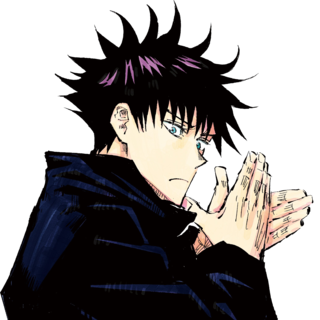
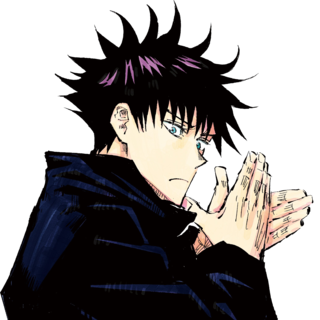
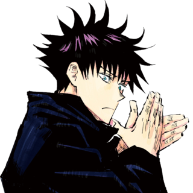

Jujutsu Kaisen (呪術廻戦, rgh. "Sorcery Battle")[b] is a Japanese manga series written and illustrated by Gege Akutami. It has been serialized in Shueisha's shōnen manga magazine Weekly Shōnen Jump since March 2018, with its chapters collected and published in 25 tankōbon volumes as of January 2024. The story follows high school student Yuji Itadori as he joins a secret organization of Jujutsu Sorcerers to eliminate a powerful Curse named Ryomen Sukuna, of whom Yuji becomes the host. Jujutsu Kaisen is a sequel to Akutami's Tokyo Metropolitan Curse Technical School, serialized in Shueisha's Jump Giga from April to July 2017, later collected in a tankōbon volume, retroactively titled as Jujutsu Kaisen 0, in December 2018
Jujutsu Kaisen is licensed for English-language release in North America by Viz Media, which has published the manga in print since December 2019. Shueisha publishes the series in English on the Manga Plus online platform. Two novels, written by Ballad Kitaguni, were published in May 2019 and January 2020, respectively. A 24-episode anime television series adaptation produced by MAPPA, aired on MBS from October 2020 to March 2021; a second season aired from July to December 2023. A sequel covering the "Culling Game" arc has been announced. The anime is licensed by Crunchyroll for streaming outside of Asia, which premiered an English dub in November 2020. The anime's original soundtrack was released in April 2021. By January 2024, the Jujutsu Kaisen manga had over 90 million copies in circulation, including related novels, digital versions and Jujutsu Kaisen 0, making it one of the best-selling manga series of all time.
